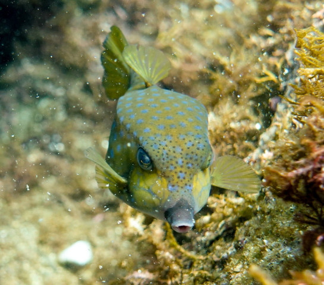
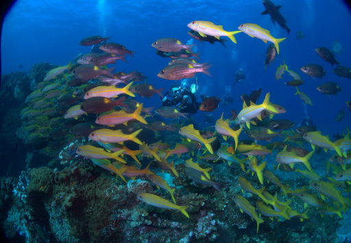

¿Quién soy?
Conoce al guía detrás de Buceo Japón y su pasión por el mundo submarino.

Puntos de buceo
Explora nuestros lugares favoritos, desde arrecifes hasta pecios increíbles.

Buceemos juntos
Únete a una inmersión guiada y vive la experiencia del buceo en Japón.